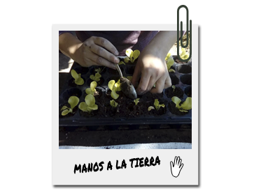

¡SÚMATE A NUESTRO VOLUNTARIADO!
¡Vamos a mover esos cuerpos a sacudirnos el cemento, a sembrar la semilla de un mundo con alimentos sanos y sin explotación, a dejar que rebrote esa maleza rebelde! Les esperamos en nuestra hermosa huerta, todos los viernes entre las 11 y las 16 30 hs.
